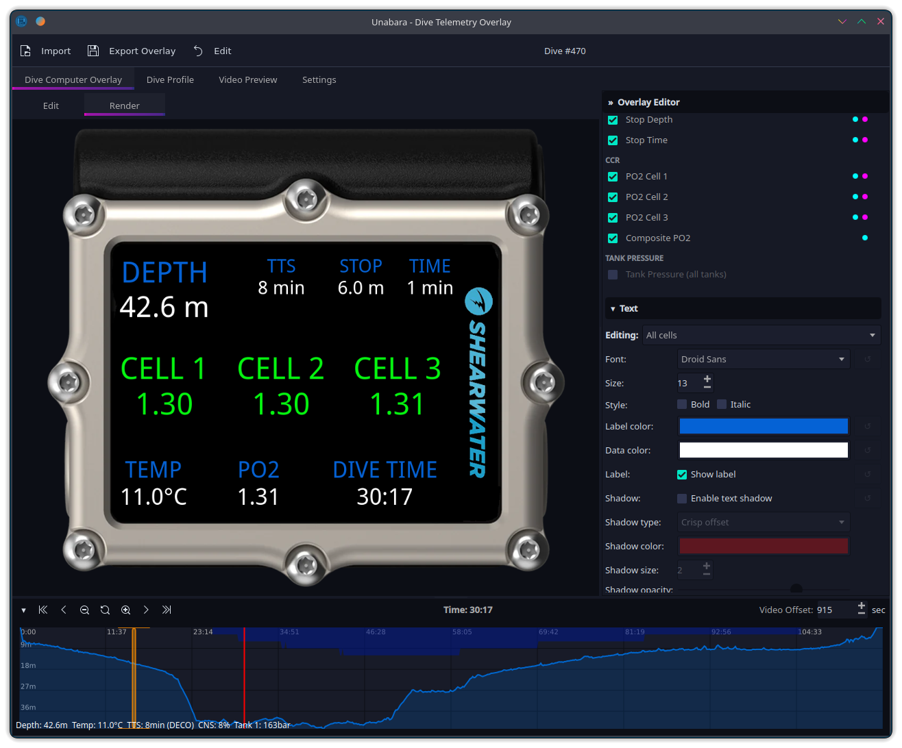
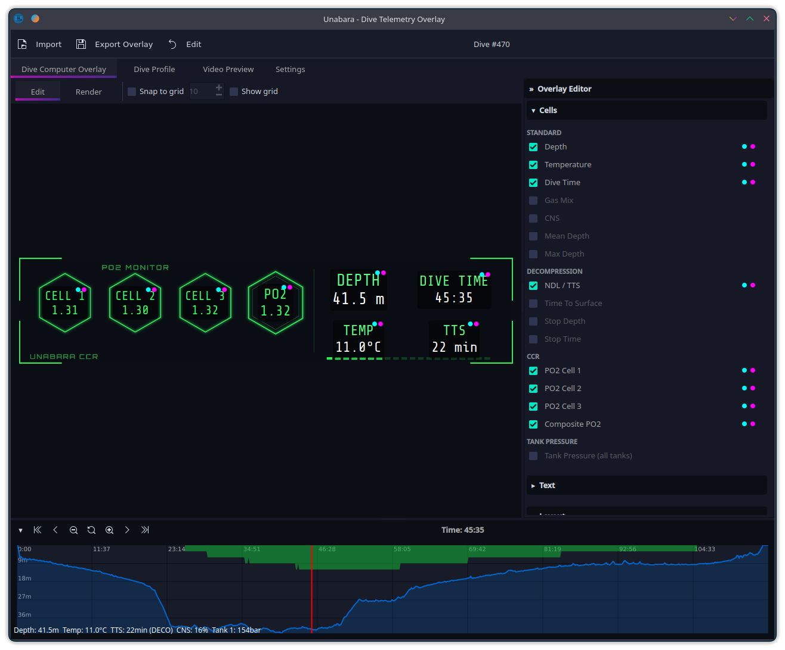
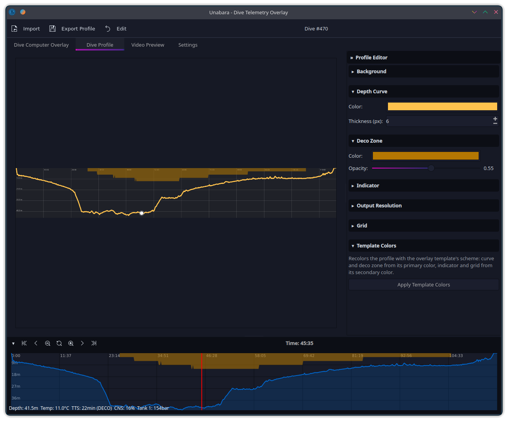
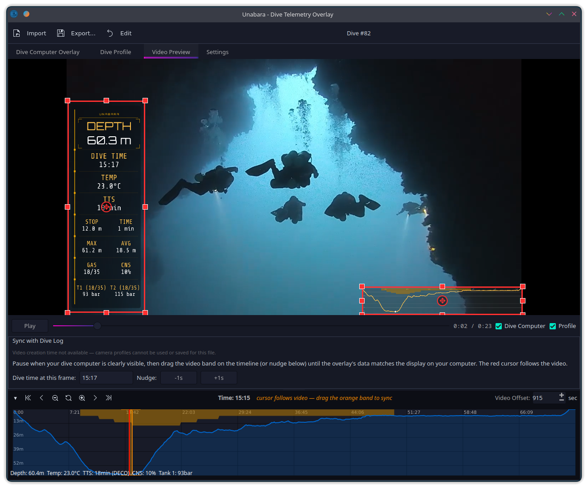
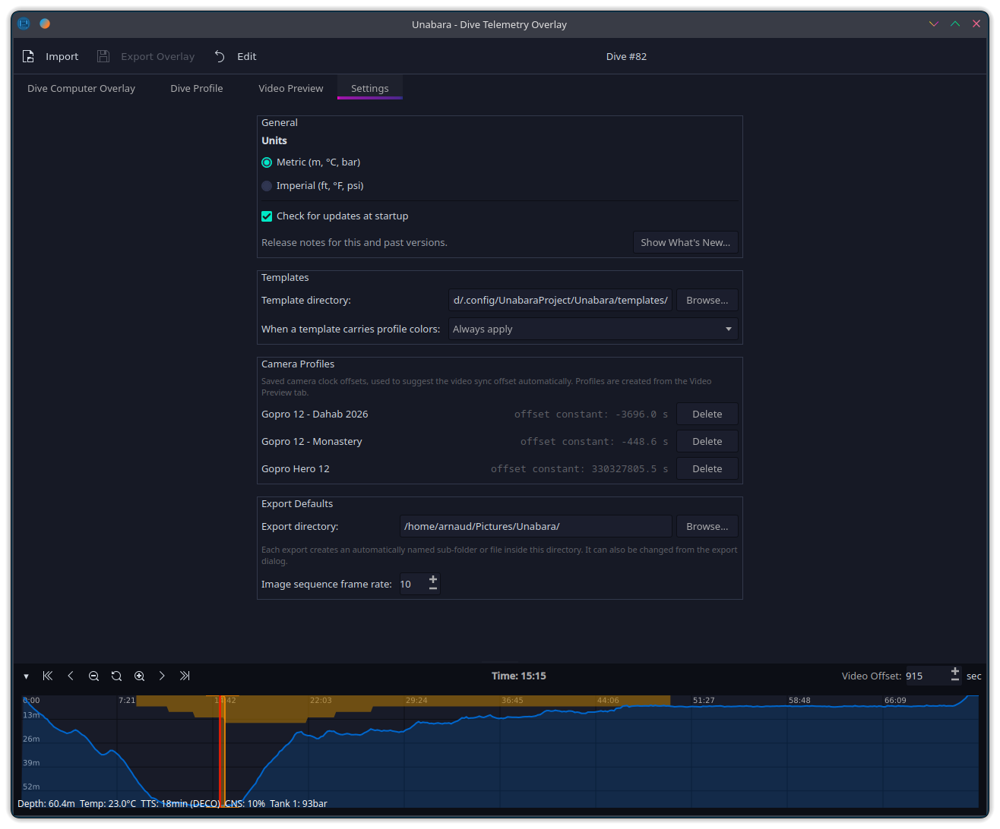
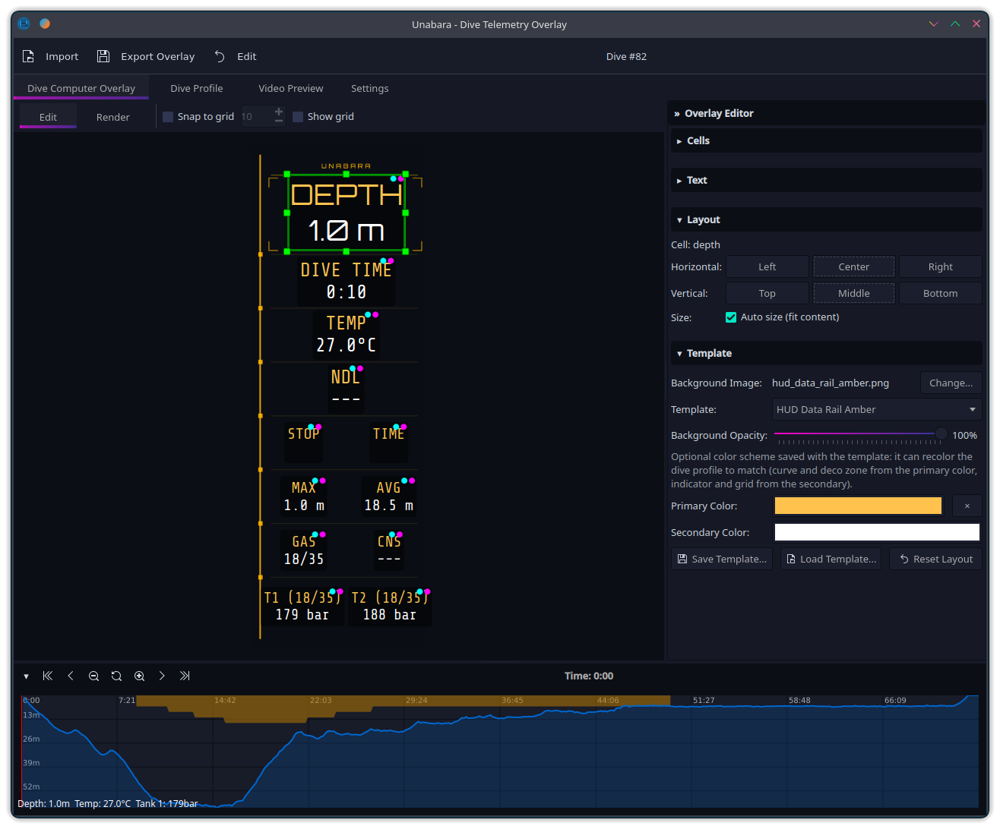
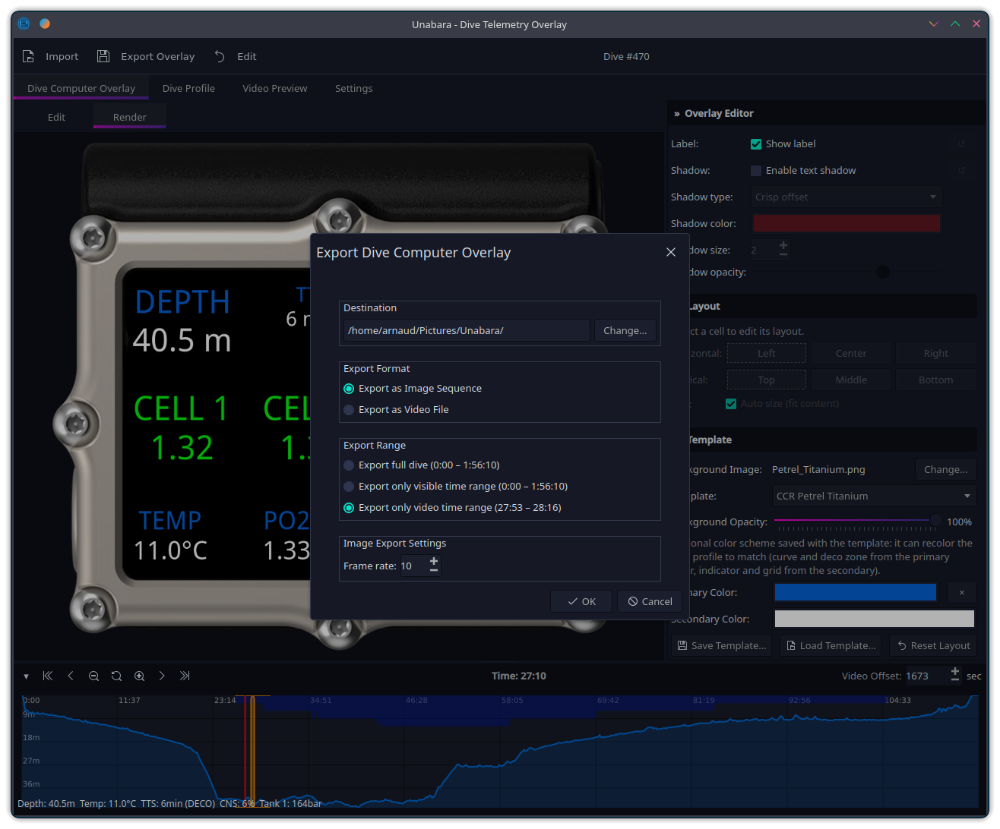

Telemetry overlays for scuba diving videos
Import your dive logs, customize your overlay, export in seconds. Open source, cross-platform, free.
Import your dive logs, customize your overlay, export in seconds. Open source, cross-platform, free.







Import Subsurface (XML/SSRF), UDDF, and FIT dive logs — straight from Garmin and Suunto dive computers — with full support for recreational, technical, and CCR dives with multi-tank pressure tracking.
One canvas, two views: arrange, resize and align cells in Edit mode, check the exact export pixels in Render mode. Independent label/value colors, text shadows, per-cell overrides, full undo/redo — save and share your designs as .utp templates.
Play your footage in-app and align it with your dive visually — the timeline cursor follows the video. Save per-camera profiles so future dives sync automatically.
Generate a customizable depth-over-time profile with a moving position indicator, optional deco-zone shading and grid — exportable as its own overlay, and themeable in one click from your template's color scheme.
Scrub through your dive and zoom into sections of interest — the visible range can be exported on its own.
Classic dive-computer faces plus the new HUD, Social and Broadcast families — sci-fi HUDs, compact vertical-video widgets for Shorts/TikTok/Reels, and a broadcast lower third, each in two color variations.
Export transparent PNG sequences or encode directly to video (H.264, ProRes, VP9, HEVC) via FFmpeg.
Available for Windows, macOS, and Linux (Flatpak). Built with Qt 6 for a native experience on every platform.
Import your dive from Subsurface (.ssrf / .xml), any app that exports UDDF (.uddf), or straight from your Garmin or Suunto dive computer (.fit).
Pick one of the 23 bundled templates or create your own. Drag and resize cells, change fonts, colors and shadows, then check the exact result in Render mode.
Load your footage and align it on the Video Preview tab — the timeline cursor follows the video, so you just match it to your dive computer.
Export as a transparent image sequence for your editor, or encode directly to video with FFmpeg.
Free and open source. No account required.
Optional: install FFmpeg for direct video export.